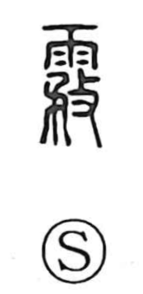

霧

Uncategorized
Kun: kiri | On: mu
fog ・ mist
Explanation
霧 is a phono-semantic character: the rain element signals a weather phenomenon, while 務 serves as the phonetic, giving the on reading mu. In the ancient definition, mist arises when qi—vapor—fails to be in accord with Heaven; that disharmony condenses into the veiling haze we call fog. In Japanese it names the fog itself (kiri) and, by extension, the setting-in of fog (as in kiritatsu).